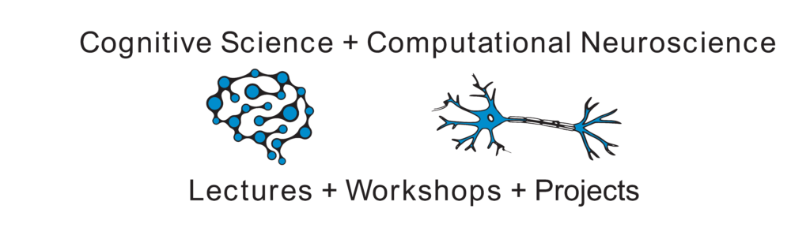

The Interdisciplinary Computational Cognitive Science Spring School (IICCSSS) is an annual educational meeting for students and young researchers interested in computational approaches to brain and cognitive sciences.
In 2022, we will have an IICCSSS one-week event on the 5th to the 9th of September. We will announce the speakers and schedule soon. Registration will open in early June.
Organisation of the event is supported by the Computational Cognitive Science Colloquium e.V.